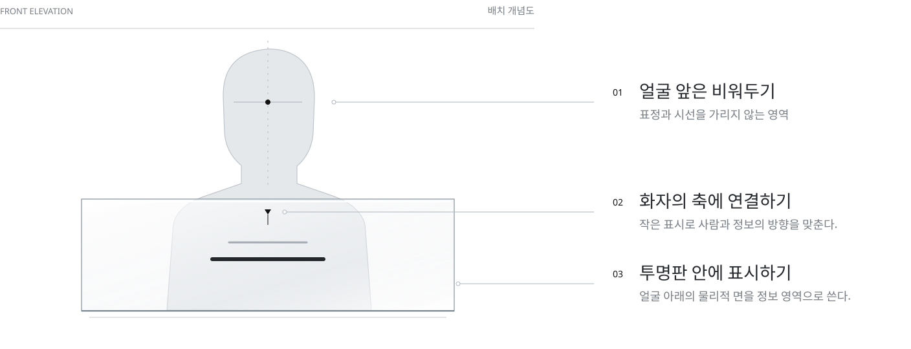

소음 속에서 상대와 거래 내용을 함께 확인해야 하는 상황
대상은 나이가 들며 청력이 약해진 고령 상인입니다. 시장의 소음 속에서는 손님의 말이 더 들리지 않는데, 상대의 말을 들으면서 품목·가격·수량을 확인해야 합니다. 상품을 다루는 동안 손을 자유롭게 쓰기 어려운 상황도 설계 조건으로 다뤘습니다.
거래의 짧은 핵심 정보를 놓칠 수 있음
별도 조작을 최소화할 필요
얼굴과 입모양도 대화의 단서
정보량보다 거래 확인에 필요한 핵심 단서

상대 얼굴을 가리지 않는 영역에 원문과 거래 핵심을 함께 표시하면, 대화 내용을 확인하는 데 도움이 될 수 있다.
사장님, 이 고등어 얼마예요?
요약 / 품목과 의도를 강조고등어 · 가격 문의원문에는 말의 맥락을 남기고, 요약에는 품목과 요청을 강조했습니다. 앞선 대화의 품목에 다음 발화의 수량을 연결하는 구조도 시나리오에 포함했습니다.
이어지는 발화 사이의 거래 맥락 연결
첫 발화 “사장님, 이 고등어 얼마예요?”에서는 ‘고등어’와 ‘가격 문의’를 구분합니다. 다음 발화 “그럼 좋은 걸로 두 마리 주세요”에서는 품목이 반복되지 않아도 앞서 나온 고등어와 이번 수량 2마리를 연결하도록 설계했습니다.
보존할 정보
호칭과 말투를 포함한 원문을 남겨, 요약이 생략한 맥락을 확인할 수 있도록 합니다.
강조할 정보
품목·가격 문의·수량처럼 다음 응답에 필요한 거래 의미를 별도로 표시합니다.
정보 편집 시나리오 기반 예시 · 자유 발화에서의 맥락 추론 정확도는 아직 검증하지 않았습니다.
대화 순서에 맞춘 정보의 표시와 전환
원문을 먼저 표시
원문을 유지하고 핵심 요약 추가
자막을 걷고 응답 안내로 전환
이전 정보를 정리하면 화면에 쌓이는 자막은 줄지만, 읽을 시간도 짧아집니다. 현재는 정해진 시간에 전환하며, 고령 상인의 읽기 속도에 맞는 표시 시간은 아직 검증하지 않았습니다.
산출물과 남은 검증
현재 산출물은 투명 대화 보조 인터페이스의 시나리오 프로토타입과 정보 편집·표시 규칙입니다. 자유로운 대화 전체의 인식·요약이나 결제 기능은 범위에 포함하지 않았습니다.
원문 → 요약 → 응답 안내
시선 이동 · 되묻기 · 정보 이해
시선 이탈 감소, 되묻기 감소, 정보 이해 향상은 아직 측정된 성과가 아닙니다. 같은 거래 과제를 기준으로 확인할 항목입니다.